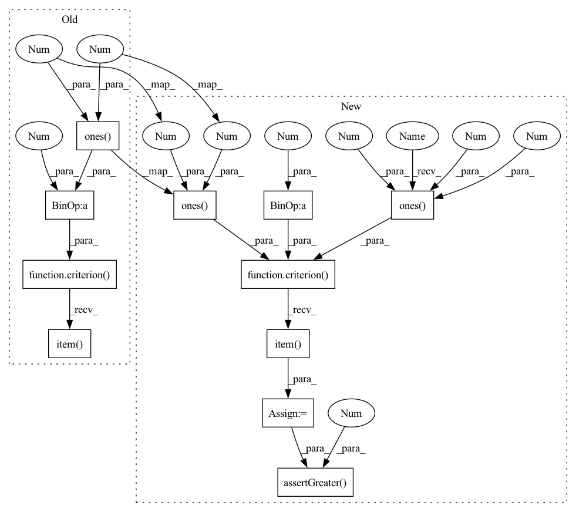

Pattern ID :1355

Before Change
avg_loss = 5.5
criterion = MinTripletLoss(margin=1)
pos_dist_data = torch.ones(2, 1, 1) * 3
neg_dist_data = torch.arange(6).reshape(2, 1, 3)
loss = criterion(pos_dist_data, neg_dist_data).item()
self.assertEqual(loss, 5.5)
if __name__ == "__main__":
After Change
criterion = MinTripletLoss(margin=1)
user_emb = torch.ones(3, 1, 5)
pos_item_emb = torch.ones(3, 1, 5) * 2
neg_item_emb = torch.ones(3, 1, 5)
loss = criterion(user_emb, pos_item_emb, neg_item_emb).item()
self.assertGreater(loss, 0)
self.assertEqual(loss, 6)
if __name__ == "__main__":
In pattern: SUPERPATTERN
Frequency: 3
Non-data size: 11
Instances
Fragment ID: 6505707
Project Name: hand10ryo/pytorchcml
Commit Name: bab75ff79e4e34d4bb9332eda0fcd9eb2e2a0628
Time: 2021-04-25
Author: hand10ryo@yahoo.co.jp
File Name: tests/losses/test_MinTripletLoss.py
M Class Name: TestMinTripletLoss
N Class Name: TestMinTripletLoss
M Method Name: test_forward(1)
N Method Name: test_forward(1)
M Parent Class: unittest.TestCase
N Parent Class: unittest.TestCase
M File Name: tests/losses/test_MinTripletLoss.py
N File Name: tests/losses/test_MinTripletLoss.py
M Start Line: 21
M End Line: 23
N Start Line: 17
N End Line: 22
'>
Before Change
avg_loss = 5.5
criterion = LogitPairwiseLoss()
pos_inner_data = torch.ones(2, 1) * 3
neg_inner_data = - torch.ones(2, 3) * 3
loss = criterion(pos_inner_data, neg_inner_data).item()
pos_loss = - np.log(sigmoid(
pos_inner_data.to("cpu").detach().numpy()
)).sum()
After Change
criterion = LogitPairwiseLoss()
user_emb = torch.ones(3, 5)
pos_item_emb = torch.ones(3, 5) * 2
neg_item_emb = torch.ones(3, 2, 5)
user_bias = torch.zeros(3, 1)
pos_item_bias = torch.zeros(3, 1) * 2
neg_item_bias = torch.zeros(3, 2, 1)
loss = criterion(
user_emb, pos_item_emb, neg_item_emb,
user_bias, pos_item_bias, neg_item_bias
).item()
self.assertGreater(loss, 0)
self.assertAlmostEqual(loss, 3.3378, places=3)
if __name__ == "__main__":
'>
Fragment ID: 6505715
Project Name: hand10ryo/pytorchcml
Commit Name: bab75ff79e4e34d4bb9332eda0fcd9eb2e2a0628
Time: 2021-04-25
Author: hand10ryo@yahoo.co.jp
File Name: tests/losses/test_LogitPairwiseLoss.py
M Class Name: TestLogitPairwiseLoss
N Class Name: TestLogitPairwiseLoss
M Method Name: test_forward(1)
N Method Name: test_forward(1)
M Parent Class: unittest.TestCase
N Parent Class: unittest.TestCase
M File Name: tests/losses/test_LogitPairwiseLoss.py
N File Name: tests/losses/test_LogitPairwiseLoss.py
M Start Line: 26
M End Line: 37
N Start Line: 27
N End Line: 41
'>
Before Change
sum_loss = 26
criterion = SumTripletLoss(margin=1)
pos_dist_data = torch.ones(2, 1, 1) * 3
neg_dist_data = torch.arange(6).reshape(2, 1, 3)
loss = criterion(pos_dist_data, neg_dist_data).item()
self.assertEqual(loss, 26)
if __name__ == "__main__":
After Change
criterion = SumTripletLoss(margin=1)
user_emb = torch.ones(3, 1, 5)
pos_item_emb = torch.ones(3, 1, 5) * 2
neg_item_emb = torch.ones(3, 1, 5)
loss = criterion(user_emb, pos_item_emb, neg_item_emb).item()
self.assertGreater(loss, 0)
self.assertEqual(loss, 18)
if __name__ == "__main__":
'>
Fragment ID: 6505723
Project Name: hand10ryo/pytorchcml
Commit Name: bab75ff79e4e34d4bb9332eda0fcd9eb2e2a0628
Time: 2021-04-25
Author: hand10ryo@yahoo.co.jp
File Name: tests/losses/test_SumTripletLoss.py
M Class Name: TestSumTripletLoss
N Class Name: TestSumTripletLoss
M Method Name: test_forward(1)
N Method Name: test_forward(1)
M Parent Class: unittest.TestCase
N Parent Class: unittest.TestCase
M File Name: tests/losses/test_SumTripletLoss.py
N File Name: tests/losses/test_SumTripletLoss.py
M Start Line: 21
M End Line: 23
N Start Line: 17
N End Line: 22